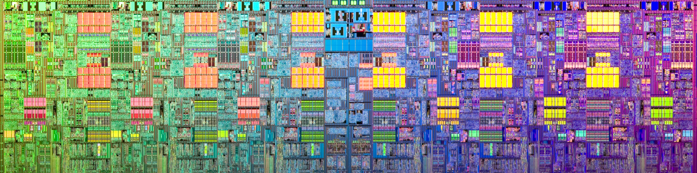

Over its turbulent years, the 20th century yielded a number of technological breakthroughs which laid bare a new paradigm for the next millennium. Here the brute power of mechanical automatons found competition in the more nuanced comprehension of information theory and computation. The gestation of these concepts eventually yielded a new model for sharing information and birthed the internet, a final gift to the new world ahead. Each of the steps leading to this moment relied on significant technological achievements. The work of Alan Turing and Claude Shannon helped formalise the modern idea of a computer and its universal potential. Equally necessary was the translation of its early mechanical inception to a digital, semiconductor composition, owed largely to the work at AT&T Bell labs (of which Claude Shannon also happened to be an employee). From here, several companies, such as Fairchild Semiconductor and Texas Instruments, skilfully wove these single transistors into a tapestry of integrated circuits, seemingly capable of much more than the simple boolean algebra on which they were operating. Up until this point in the story, what one would consider “tech” is largely forged in the disciplines of science, engineering and mathematics. Any advancement relied heavily on expertise in these fields and all those participating were of the same ilk.
In the years since, these once defined boundaries have blurred. Naturally, the growing complexity of computers necessitated specialisation, making the software engineer an entirely legitimate and imperative role within relevant organisations. More broadly though, the perception of tech within the social consciousness has been warped by a wave of irrelevant start ups. The driving force behind this is closer to the greed of the 80’s yuppies than the intellectual pursuit of the industry’s creators. Now what we consider tech is an amalgamation of marketing, gambling and ecommerce. San Fransisco has been blighted by a swarm of intelligent, young, ambitious, technically brilliant graduates looking to score a job at… Pintrest, DoubleDutch or even… Duetto. Though far from dazzling, there are many entrepreneurial spirits are out there on their own. Looking to make a genuine impact in the world by creating the next… Pintrest, DoubleDutch or even… Duetto. The majority of companies touting revolution more closely imitate iteration (and in the smallest degree). The buzzword of innovation has been diluted down to improving UX and including additional swipe gestures. The biggest names of this recent flourish, such as AirBnb and Uber, who’s profit margins indicate they are actually providing a useful product, are simply a 21st century adaptation of previous industries. The difference largely lies in their parasitic appropriation of the “sharing economy” mantra to minimise overheads and shift risk to the consumers.
If we expand our scope of observation only slightly, the mobile gaming industry appears on our periphery. I have no qualms with gaming in general, but what’s flooding our mobiles could more accurately be described as pokie machines thinly veiled by a well trodden gameplay mechanism. The most clear example is the Candy Crush phenomenon. A simple match-three puzzle game, Candy Crush is more or less a port of Bejewelled (which probably was copied itself) into a modern day setting. Yet it has accrued its creators literally billions of dollars. The same disparity between originality and profitability can be said for Flappy Bird, Words with Friends and a whole host of inductees to the Apple and Android app store. At best these developers are merely providing a way for the public to kill time, which is not in itself entirely harmful (though not productive either). More cynically, they are deliberately employing the psychology of addiction to garner return customers pouring their dollars towards digital trinkets.
Overall, the current state of affairs was succinctly put by Jeff Hammerbacher.
“The best minds of my generation are thinking about how to make people click ads”.
There are impressive companies with lofty ambitions, trying to make an impact in the world (thank you Elon Musk), but a brain drain towards more frivolous endeavours is impeding progress. Labelling all the above examples as “tech”, which itself has gained a reverence probably ill-deserved, imbues such career options as equally nobel uses of one’s gifts. As a collective, we must stop hyping the relative mundaneness of a taxi-calling app, and recalibrate our perspective. Otherwise, after spending a century setting the foundation and infrastructure, paving a roadmap towards our future enlightenment, we’ll remain pulled over on the dusty side road, checking out the bright lights of the carnival just passed.